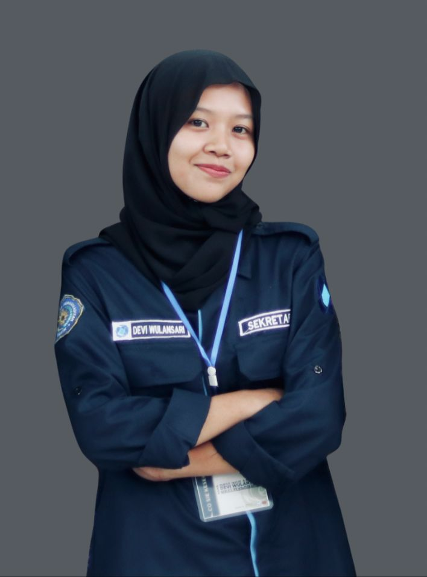
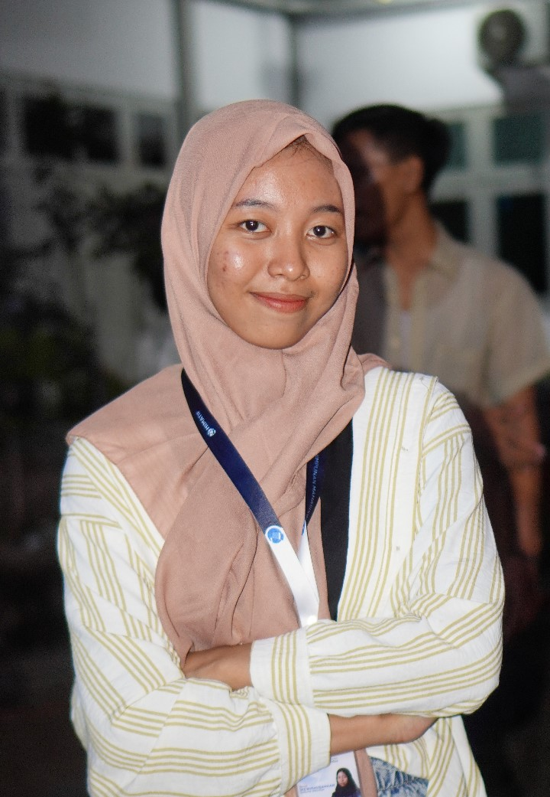

BIODATA
Biodata Devi

Nama : Devi Wulansari
Tempat/Tanggal Lahir : Gresik, 13 Agustus 2002
Alamat : Kebundaya
Jenis Kelamin : Perempuan
Agama : Islam
Biodata Tiara

Nama : Barqiyah Tiara Putri
Tempat/Tanggal Lahir : Gresik, 23 Oktober 2003
Alamat : Kumalabaru
Jenis Kelamin : Perempuan
Agama : Islam
Biodata Fara
Nama : Ainul Faradisa
Tempat/Tanggal Lahir : Gresik, 1 januari 2003
Alamat : Pamasaran
Jenis Kelamin : Perempuan
Agama : Islam
Biodata Badrus
Nama : Badrus Zaman
Tempat/Tanggal Lahir : Gresik, 16 november 2002
Alamat : Pudakit
Jenis Kelamin : Laki-laki
Agama : Islam
Biodata Ridwan
Nama : M. Ridwan Bayu Pratama
Tempat/Tanggal Lahir : Gresik, 5 April 2004
Alamat : Pateken
Jenis Kelamin : Laki-laki
Agama : Islam
Biodata Adis
Nama : Asrorul Faradis
Tempat/Tanggal Lahir : Gresik, 29 Agustus 2004
Alamat : Dissalam
Agama : Islam